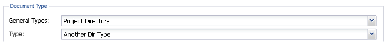
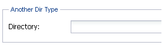
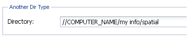

Регистрация каталога файлов
В Приложении имеется возможность регистрации каталога (директория), содержащего группу файлов и/или подкаталогов, с занесением в хранилище метаданных о нем без закачивания самих документов. В этом случае в базе будет храниться только ссылка на каталог и пользователь может использовать его в справочных целях без возможности скачать документы из каталога к себе на компьютер.
Для регистрации каталога необходимо в карточке метаданных в панели Document Type в поле General Types выбрать класс Project Directory (Директорий), а в поле Type – выбрать один из имеющихся типов, назначенных администратором, например, ArcGIS Project Type или Another Dir Type.

Класс Project Directory – это специальный класс, созданный администратором, который не имеет расширений. Поэтому в панели File(s) не появятся возможные расширения загружаемых файлов, а лишь поменяется название панели.

В появившемся окошке следует вручную ввести путь к необходимому директорию. Например:

Заполнив остальные обязательные поля, нужно нажать на кнопку Add в правом нижнем углу интерфейса для загрузки каталога.
В дальнейшем поиск зарегистрированного каталога осуществляется аналогично поиску файлов (документов).